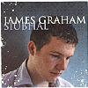

Celtic Lyrics Corner > Artists & Groups > James Graham > Siubhal > An Rìbhinn Donn
|  | An Rìbhinn Donn |
| Credits : | Arranged by James Graham & Mary Ann Kennedy |
| Appears On : | Siubhal |
| Language : | Gàidhlig (Scottish Gaelic) |
| Other Versions : | " An Ribhinn Donn " on Capercaillie's album Crosswinds |
| Lyrics : | English Translation : |
| Sèist : | Chorus (after each verse) : |
| Ochòin a rì 's i mo rìbhinn donn | Alas oh Lord, she is my brown-haired maiden |
| Dh'fhag mi fo mhì-ghean 'us m'inntinn trom | Who left me sad and down-spirited |
| Gur e a bòichead a rinn mo leònadh | 'Twas her beauty that wounded me |
| 'S cha bhi mi beò gun mo ribhinn donn | And I cannot live without my brown-haired maiden |
| Is truagh an dràsda nach robh mi'm bhàrd | 'Tis a pity just now that I was not a bard |
| A ghleusadh clàrsach 's a sheinneadh dàn | Who could tune a harp and sing a song |
| 'S gun innsinn buadhan na maighdinn uasail | And I would relate the virtues of the proud maiden |
| Mu' bheil mo smuaintean gach oidhche 's là | For whom my thoughts are each night and day |
| Mar chanach mòintich tha cneas mo luaidh | Like moorland bog-cotton is my dear one's skin |
| Dearg mar chaorann tha dreach a gruaidh | Red like the rowan is the color of her cheeks |
| A beus 's a nàdur mar neòinean màlda | Her virtue and nature like the modest daisy |
| No sòbhrag dh'fhàsas fo sgàil nam bruach | Or a primrose that grows in the shadow of the banks |
| Gur bòidheach dualach an cuailean mìn | How neat, curled is the smooth hair |
| A th'air a' ghruagaich a bhuair mo chrìdh' | Of the maid who troubled my heart |
| Gur binne còmhradh na guth na smeòraich | Her conversation is sweeter than the song of the thrush |
| 'S tha mise brònach on dh'fhàg i mi | And I am sad since she left me |
| Ged tha mo ghrian-sa a' triall fo sgleò | Though my own has disappeared under a cloud |
| 'S mise 'm bliadhna mar ian 's a cheò | And I am this year like a bird in the mist |
| Togaidh an sgàile 's ni ise deàrrsadh | The shadow will lift and she will shine |
| 'S gu'm faigh mi slàinte gach là ri'm bheò | And I will have health each day of my life |